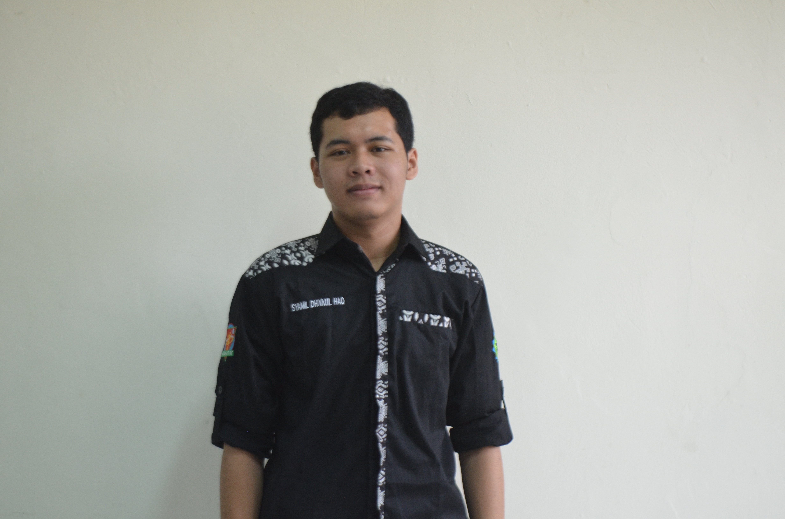

Tentang Saya

Halo, saya Ziyadul Quwwah, seorang mahasiswa dari Program Studi Informatika di UIN SGD. Saya memiliki minat pada pengembangan web, desain antarmuka, dan Data science. Saat ini saya sedang mengembangkan kemampuan pemrograman melalui berbagai proyek dan pengalaman belajar.
Mata Kuliah Semester Ini
| No | Nama Mata Kuliah | SKS |
|---|---|---|
| 1 | Pengembangan Aplikasi Web (PAW PAW) | 3 |
| 2 | Manajemen Basis Data | 3 |
| 3 | MPPL | 3 |
| 4 | Intelegensia Buatan | 3 |
| 5 | Pengembangan Aplikasi Mobile | 3 |
| 6 | Jaringan Komputer | 3 |
Kontak dan Tautan
Temukan Saya di Instagram
Kunjungi profil saya di GitHub untuk melihat proyek yang pernah saya kerjakan.